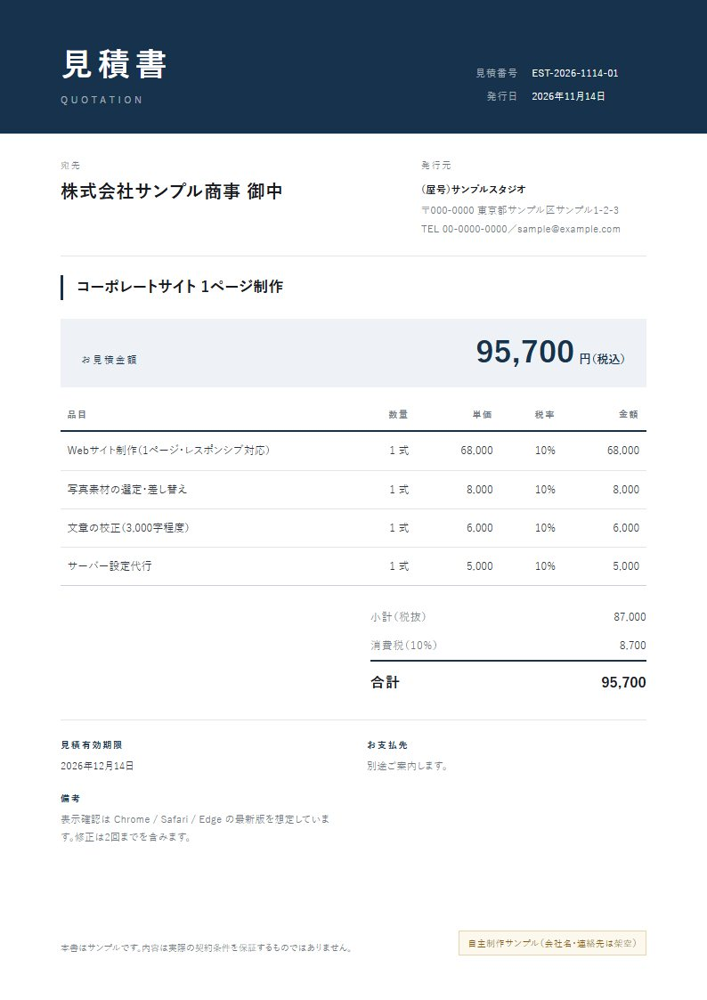
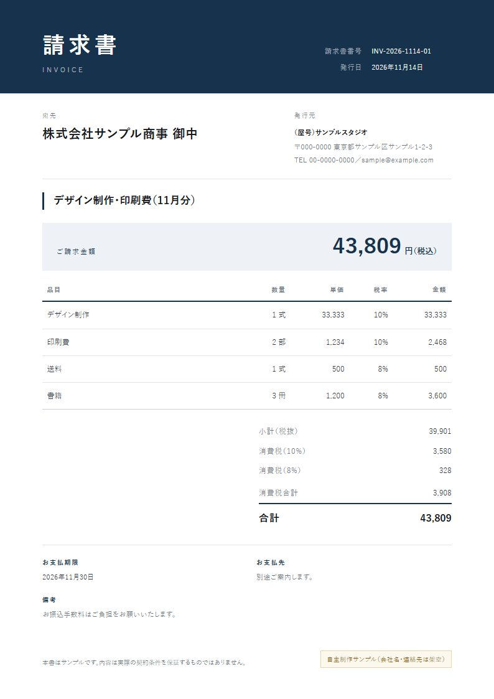

見積書・請求書の自動生成
明細のCSVから、A4 1ページの見積書・請求書PDFを生成する自主制作サンプルです。
このページについて（動作の実体）
このページは成果物の紹介ページです。Webサービスではないため、ここから見積書を作成することはできません。
- 実体は、手元のPCで実行するコマンド（Node.js）と、PDF用のHTMLテンプレートです
- 入力は明細CSVと設定ファイル。実行すると、HTMLとPDFが同じフォルダに出力されます
- 掲載しているPDFは、サンプルデータから事前に生成したものです
- サーバー・データベース・ログイン機能はありません。顧客情報を預かる作りにしていません
ソースコードは非公開です（ご提案時に提示します）。受注時は、お客様の環境に合わせてコマンドのまま、またはスプレッドシート（GAS）として納品します。
できること
- 明細CSV（品目・数量・単価・税率・単位）から、見積書／請求書を生成
- 税率8%・10%の混在に対応。端数は税率ごとに切り捨て
- A4 1ページ。PDFはブラウザの印刷からも同じ見た目で出力
- 生成時間は約1.1秒／通（4明細・PDF出力込みの実測）
サンプル


手作業との違い
| 工程 | 手作業 | この仕組み |
|---|---|---|
| 明細の転記 | 毎回ひな形へ手入力 | CSVを1枚用意するだけ |
| 税率ごとの端数 | 電卓で計算し、目視で確認 | 区分ごとに切り捨てて自動計算 |
| レイアウト | 行を足すたびに崩れを確認 | 固定テンプレート。行数が増えても同じ組版 |
| ミスの確認 | 提出前に目視でチェック | 生成のたびに51項目を自動検証 |
仕組み
- 入力：明細CSV（品目・数量・単価・税率・単位）と、宛名・件名・番号・期限をまとめた設定ファイル
- 出力：HTMLをA4で組版し、ブラウザの印刷機能でPDFにします。有料ソフトもPDF用ライブラリも使いません
- 検証：CSVから独立に再計算した金額との一致、行数、必須項目、外部参照の有無、PDFが1ページか、フォントが埋め込まれているかを自動で確認します
注意
自主制作のサンプルです。実在の企業・団体から受注した実績ではありません。掲載している社名・住所・連絡先・金額はすべて架空で、実在の口座番号や登録番号は使用していません。